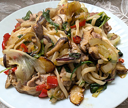

具だくさんの焼うどん
- 調理時間：15分
- （一人当たり）
- カロリー：408kcal
- たんぱく質：12.5g
- 脂質：14.3g
- 炭水化物：54.2g
- 塩分：1.7g


＜2人分＞
- うどん
(ゆで、または冷凍など) - 2食分
- 豚肉(一口大に切る)
- 60g
- 玉ねぎ(繊維にそって細切り)
- 1/4個
- シイタケ(細切り)
- 2枚
- パプリカ(種を除いて細切り)
- 1/4個
- セリ(5cm長さに切る)
- 2株
- レタス(ざく切り)
- 2枚
- 葉ネギ(小口切り)
- 3～4本
- 植物油
- 適量
- みりん
- 大さじ1
- 塩、コショウ
- 少々
- 醤油
- 大さじ1


- うどんは、商品の表記通り、電子レンジで加熱する。
※乾麺を使用する場合は、指定の時間をゆでて水でしめておく - 豚肉と野菜は、それぞれ切る。
- フライパンに植物油をいれて、中火にかけ、豚肉を炒める。
豚肉の色が変わったら、野菜を加えて順に炒める。
※野菜はかたいものから順に炒めましょう - ①のうどんを加え、更に炒め、全体がなじんだら、みりん、塩、コショウで味をととのえる。
- 最後に、醤油を鍋肌に入れ、香ばしい香りが立つまで炒め合わせる。
具だくさんの焼うどん
香川県の讃岐うどん、秋田県の稲庭うどん、群馬県の水沢うどん、長崎県の五島うどん、富山県の氷見うどん、など。日本には地域ごとに独自の食文化があり、うどんもまた、その一つです。だし汁でいただくうどんも美味ですが、醤油やソースと絡み合った香ばしい焼うどんも魅力的。冷蔵庫の具材をたっぷり使い、季節を問わず楽しめますし、咀嚼を促す調理法としてもおすすめです。